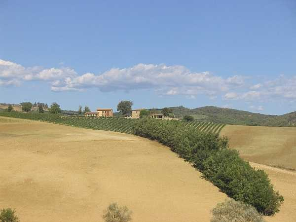
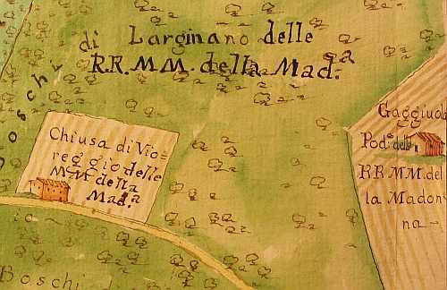

Da Quercegrossa, guardando a Levante, si scorge in lontananza il profilo di Viareggio posto su un crinale che divide la valle del Bozzone dai piani di Gaggiola e dell’Olmicino. Si trova sull’antica strada che collega Larginano a Petroio; strada che sale leggermente e Viareggio coi i suoi 345 metri si eleva di poco su Gaggiola. Altre strade che conducevano a Viareggio partivano dal Casino e dalla strada della Catena. Chiamato comunemente ai giorni nostri Viareggio, questo podere è stato indicato nel passato con diverse varianti del nome causate dall’incertezza della vera denominazione che forse non è mai stata accertata veramente anche se l’Istituto Militare segna sulle sue carte il nome di Vicoregio, mentre al contrario questo toponimo non viene mai usato nel passato e i parroci, in una totale incertezza, segnavano nel 1598 Vigoregio, Viareggio nel 1600, poi Vinoreggio, Vigoreggio nel 1672, Vioreggio (1749), Viareggio (1767), Viereggio e persino Violeggio, fino a ridiventare ai tempi di don Luigi Grandi, Vicoreggio. In realtà il nome potrebbe derivare benissimo dalla voce latina "viaris" relativa a via, strada, e non da quella immaginata di "vicus" che indica un’insieme di case.

Questa teoria è rafforzata dal fatto che fino al Settecento Viareggio è stata una "pigione, ossia un modesto fabbricato, forse più capanna che casa, dove viveva un pigionale con una piccola famiglia mediamente composta di tre/quattro unità, ma spesso vi si trovavano due persone soltanto. Il pigionale coltivava una piccola vigna detta "chiusa" annessa alla casa
(vedi foto a fianco: parziale veduta da un Cabreo del 1735). La prima volta sui testi come "podere" risale al 1749 quando vi abita la famiglia Brogini composta da 4 persone, ma è un’eccezione perché successivamente si continua a indicarlo come pigione e anche logaiolo il suo pigionale. L’attuale aspetto si deve senz’altro ad un decisivo intervento edilizio che sostituisce la vecchia abitazione con una solida costruzione a pianta quadrata su due piani munita di tutti gli ambienti agricoli nel piano terra con abitazione al superiore e una capanna distaccata. Dal catasto del 1825 Viareggio è descritto con Capanna aia di 504 bq.; Casa colonica di 468 bq. (160 mq.); pozzo d’acqua di 630 bq. Totale case e annessi 1602 bq. Facente parte della fattoria di Larginano è appartenuto alle Monache della Madonna fin dal Cinquecento per passare poi a Bernardino Bruschi a inizio Ottocento dopo la soppressione del Convento e in pratica per la proprietà è sempre stato collegato alla fattoria alla quale si rimanda. Come Gaggiola anche a Viareggio non è mai arrivata l’energia elettrica. Tra i pigionali dei primi tempi si ricorda una Maria Betta a fine Cinquecento, Oretta Viligiardi vedova Vanni, Tognio Sali e la famiglia Pasquini nel Seicento. Nel podere oltre al detto Brogini vi lavorarono i Neri, i Chiavistrelli, i Baroncelli e i Lazzeri. Il Novecento vi trovò Fortunato Mugnaini e infine l’arrivo dei Landi nel 1902, gli ultimi coloni che vi hanno abitato.
Dalla piccola vigna del Settecento si sviluppò un podere esteso circa sedici ettari guadagnando molte terre boscose d’intorno, rese coltivabili col passare dei decenni. Buona la produzione di grano e nella stalla fino a dodici bestie
"tenevano le vacche perché producevano". Da ricordare il pollaio con una trentina di tacchini allevati. Disponevano di tre carri.
Il podere visto dalla strada di Gaggiola
L'abitazione del colono con la loggetta all'ingresso
Ultimo podere in ordine alfabetico
Inizio pagina
Indice dei Capitoli